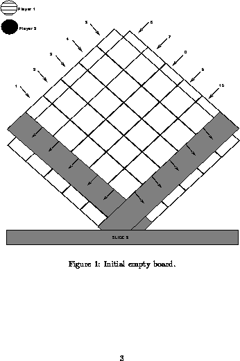
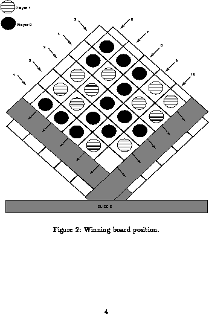
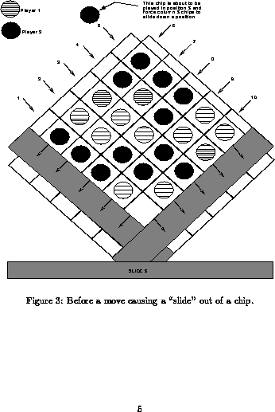

This is a group project to be done in groups(3 members per group). The project is as follows: Write a C program that enables two players to play the game Slide-5. The rules for the games appear in the next section.
Note these rules are from the actual game.
1. Each player chooses a color of playing piece.
2. Decide which player goes first.
3. The first player slips a chip into any one of the 5 slots along
either side of the top of the game board (see Figure 1).
4. The second player puts a chip in any one of the slots.
5. Players take turns inserting chips of their color one at a time,
either to advance a row of their color, or to block an opponents
chip. The first player to get 5 colored chips in a row, either
vertically, horizontally, or diagonally, wins the game. (Note a
player may run out of chips, see rule 8.)
6. The strategy of the game is to block your opponent from getting 5
in a row while at the same time placing your chips so you get 5 in
a row.
7. Slide 5! .. When a row is filled up with 5 chips, any chip put in
will cause the bottom chip to roll out the bottom. This is called
SLIDING 5! Be very careful before you slide 5, because the new
combinations that form may result in a win for your opponent. Look
very carefully at what will result when all the chips move.
8. A chip which is forced out the bottom during a "slide 5" may be
reused by its owner. Sometimes, however, a player may run out of
chips to play. When this happens, a PENALTY results. The player
without chips must continue to play USING THE OPPONENTS CHIPS until
another chip of the proper color becomes available. When playing
with your opponents chip, try to place that chip in a position that
will not set up a win situation for your opponent. Or turn the
tables by using your opponents chip to "slide 5" in a way that will
allow you to recover one of your own chips. (Note, when a player
has chips of his/her color he/she MUST play thess.)
9. Play continues until one player gets 5 chips of his/her color in a
diagonal, vertical or horizontal line. When this happens, the game
is over.
10. Each player starts with 16 chips.
Figure 2 details a winning position for player number 2. Note the 5 black chips in column 8 constitute 5 in a row. Figure 3 details a board position before a "slide 5" occurs. Note that Player 2 is about to insert a chip in column 5 that will force out a player 2 chip at the bottom. Figure 4 details the board position after the "slide 5."
Your program controls the board for the game by calling several modules as
required. The base set of modules are as follows (also see the structure
diagram, Figure 5 later in the section):
* Setup - initializes the board and the game.
* Display - displays the current status of the game board and that of
the players. For example, Figure 1 shows an empty game board and
the elements representing each player. Note that your board can be
much simpler than this (i.e., using ASCII characters as shown later
in this section. Note that you MUST display the board as shown, that
is, a square on a diagonal, as that is the "actual" position of the
board in real-life, allowing the "pushed out" chips to slide down
for reuse. The status of the individual players (i.e. number of
chips remaining) should also be displayed in some manner.
* Do_Move - validates the move and updates the board. If a player
enters an illegal move, the program should reject the move and loop,
prompting for a new move until the player enters a legal move. The
board and game status should be displayed each time the player is
prompted, thus allowing the player to evaluate the game status when
deciding on a move.
* Game_Over - determines who (if anyone) has won the game and
announces the winner. Note that the game can end only if a player
wins, or perhaps if one player asks to quit.
* Get_Move - obtains a move from the current player. Note that in
certain situations it may be necessary to use an opponents chip!
Ensure that the player is aware of what is happening and why, when
this case arises. Perhaps some kind of display should say how many
chips a player has currently.
* Other_Player - switches who is the current player.



Example ASCII game board:
5 X 6
/ \
4 X X 7 Turn: Player 1
/ \ / \
3 X X X 8 Diss Remaining
/ \ / \ / \ Player 1: 16 (T)
2 X X X X 9 Player 2: 15 ($)
/ \ / \ / \ / \
1 X X X X X 10 Valid Selections
/ \ / \ / \ / \ / \ H help
X X X X X X Q quit
\ / \ / \ / \ / \ / R rules
X X X X X # insert into slot
\ / \ / \ / \ /
X X X X
\ / \ / \ /
X X X
\ / \ /
X X
\ /
X
Your Move (H,Q,R,#) ? 3
The due date is: Nov. 22th, 1996 and Dec. 6th,1996 at 6pm.
The following is a list of types and Data Structure that may be useful in
implementing Slide-5.
Note that there are suggestions only,you may choose ones as you see fit.
. INT board(5,5) --- a 2-dimentional array representing the current status
of the game board. Note that this represetation could be made woth a CHARACTER
array also.
. char *player -- representing the current player,since you have two
players it si sensible to use a character to represent each.A player's name is
a natural choice.
. Of course you may need many other variables in addition.
It is IMPERATIVE that, as a group you discuss the design of your program
before constructing it. Otherwise, you may create a unrecoverable mess if you
jump into programming without some sound thought in advance. In particular,
use the general approach discussed in class: break the problem down into the
main pieces of the problem (remember the Xs and Os example ?), decide how they
fit together, build each separately and test them that way, start assembling
them and testing the growing whole, and finally test the result. This process
involves an iteration at each module making it work as you design - ie build,
test, revise, test ... etc. As well, you will likely find that your design
will change as you go. Once again make sure you carefully test anything you
change in this way. Be particularly careful about changing parts after they
have been integrated into a bigger whole.
1. Deside which modules should be functions. 2. When any single module implementation becomes TOO large or Too complicated, break it down into smaller more manageable modules. 3. Use Display to print the board to assist you when you are debugging. 4. Use incremental testing when debugging your programs. This is done by adding one module at a time and testing it thoroughly. 5. Submission requriements will be explained on-line and hints will be posted or mentioned in class as appropriate. 6. Testing is very important,and a good project write-up would include an explanation and description of the testing you did innthe course of creating your name. test cases might include validating a player move as valid,insuring that a full row demonstrates proper "sliding" behaviour,detecting the end of game and winner properly,and any other important functions you determine. TAKE NOTE: .note 1 : You are not restricted to using only the data structure and modules listed here. However,any new modules,etc should be clearly explained and have meaningful names. .note 2: You must document your modules of code neatly(use whitespace liberally), consicely, and clearly. Don't be cryptic, your mark may depend on it! .note 3: Part of working in a group is being able to delegate responsibilities.Allocate modules among the different members of your group and coordinate testing and combining of your modules.
Remember that you are creating a game for two players. They should be shown the board position after each move and the flow game should be clear and unambibiguous. Remember that this game is intended for players from age 7 to adult so your instructions muct be clear. It would be a good idea to allow the players to view the rules if they so desire.
Due Nov.22th,1996 6:00 pm. This project is to be preliminary
report and is part of the overall project.... it should contain the
following information:
1. The full names, ID numbers,login names of the group numbers.
2. An algorithm in pseudo-code (ie the syntax is not important, the
concepts are) of the main program and the major modules of the program.
The algorithm must be hand_printed.
3. A "structure chart" showing the overall design of the program.
Basically what we are looking for is an idea of what you have decided
are the main problem sub-tasks and how you have fit them together.
Modules fit together through INPUT and OUTPUT - be clear in your
specification, but the format is up to you. Note, your program MUST
make use of functions for both clarity and ease of design.
4. What were your successes, failures, how did you break down the
problem and why. What is your plan to complete the project. This
portion of the report should be approximately 3-5 pages.
The purpose of this report is to ensure that everyone in groups by this date and that the work for the project has begun. One of the goals of the project is for you to work in a group and learn some project management skills. Everything handed in is to be done with your group partners with the exception of the peer evaluation forms. These group management skills include arranging meetings and delegation of duties. As part of the final submission materials,each group member is to hand in a Peer evaluation Form assessing both their contribution to the group as well as their views of the other group members' contributions... remember - this is designed to be the group project.
If you should happen to get your program really firing along and you are looking for an extra challenge, consider providing an option for a one player game where the second player is the computer. A simple way to do this is let the computer select randomly from the allowable legal moves. Alternatively, you could program some simple strategy for the computer. Extra marks of course may ensure from any such efforts. Have Fun !
To get credit for this assignment, you must electronically turn in the
application programs and the project report. You will be asked to hand in the
following items before the due date1: Nov 22nd, 1996 at 2.30pm:
1. Progress report describing what you accomplished in the first
part of the project. Details appear previously.
2. A main program and subroutines/functions which can allow the
player to input chips into slots in turn according to the rules, and
the programs which can display the board current status. Ie the main
program should support player movements and board display.
The final project due date : Dec 6th, 1996, 2.30pm.
For the final submission, you will have to hand in: (1) An updated
progress report as before, (2) the source code for your program
(online as will be discussed in class), (3) a manual which
describes the use of your program - ie this is designed for those who
might want to play the game you have built. It should provide
examples and a detailed description of the operation of the game. In
addition, your group will have to schedule a demo of the project with
the TA or instructor.